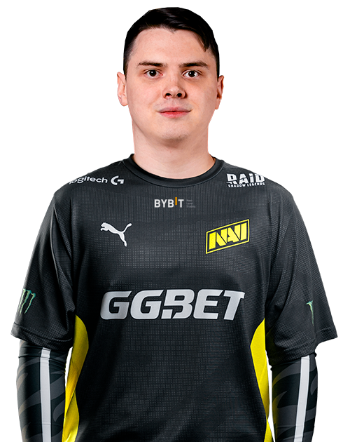

|
О первой команде:
«Это была Evolution, белорусские ребята. Когда я играл в Казани, меня нашёл hooch и показал всему СНГ, что есть такой игрок — electronic. Потом я совершил, наверное, одну из самых глубочайших ошибок — ушёл от него, вернулся обратно в Казань. У меня опять-таки не срослось с игроками: я слишком верил казанскому CS и думал, что ребята могут выйти на новый уровень и хотя бы побеждать на чемпионатах России. Но этого не произошло. Мне было 15-16 лет, [когда я уходил из Evolution]. Я не особо понимал перспективы. Я был таким BabyRage. Меня критиковал Митя, чтобы я рос как игрок, а я не мог эту критику воспринимать. На этом фоне, грубо говоря, сказал неприятные слова Мите и ушёл из команды. Помню, на тот момент зарплата была $200. Это были крутые деньги на тот момент: жил как царь, мог себе всё позволить». Об отношении родителей:«Когда я только начал играть на чемпионатах в Казани, мама не понимала, чем я занимаюсь. Она давала мне деньги, чтобы я ездил на чемпионаты. Но со временем она устала от того, что я ходил и проигрывал деньги. Она подумала, что это какой-то азарт, что на мне делают деньги. Многие фанаты хотят знать electronic cs go, electronic cs go config, electronic cs, а также electronic settings cs go. Отец всегда поддерживал. У меня есть старший брат, который тоже всегда меня поддерживал и говорил: "Ты в дальнейшем попадёшь в NaVi. Ты добьёшься своей цели и будешь играть на мировом уровне". Это был 2010 год. Я ему верил, старался, не хотел подвести: он показал мне игру и сделал всё, чтобы я чего-то достиг. Я очень благодарен брату за то, что он вывел меня на хороший путь». 
«Так получилось, что NaVi cs go летом решили дать второй шанс Денису seized cs go Костину. Им нужен был саппорт-игрок, подумали, что я не саппортящий игрок, и решили оставить seized. Как мне сказали, ему дали испытательный срок в 3-4 чемпионата. Я заранее знал, после каких турниров со мной могут ещё раз связаться. Со мной связались [после ESL One New York 2017], спросили, не хочу ли я опять-таки попробовать в NaVi, не исчезла ли у меня искра попасть туда после тех переговоров. Они очень сильно ударили по моей моральной составляющей. Я очень хотел попасть в NaVi, и когда ты узнаёшь, что это уже не произойдёт, то очень сильно теряется мотивация. Я преодолел себя в первую очередь и тренировался, тренировался. Знал, что я когда-то да попаду в NaVi: судьба так сложится. Любой труд будет оправдан в дальнейшем». Многие фанаты хотят знать electronic cs go, electronic cs go config, electronic cs, а также electronic settings cs go. Об успешном трансфере:«Во второй раз NaVi были намного решительнее. Они очень хотели заполучить меня. Грубо говоря, были готовы отдать любые деньги, чтобы забрать меня. Вторые переговоры тоже были трудными. Сначала вроде бы всё было окей, потом какие-то проблемы со стороны FlipSid3 Tactics. Вот эти все форс-мажорные обстоятельства затянулись надолго: я мог попасть в NaVi ещё 3-4 недели назад. FlipSid3 хотели очень большую сумму за меня и не хотели терять меня как игрока. Ранее они говорили, что хотят построить состав вокруг меня. Думаю, что мои тиммейты были рады за меня. Они понимают, что это уже новый уровень игры и что каждый игрок, тем более молодой, мечтает попасть в NaVi. Они очень спокойно отнеслись, поддержали меня, за что electronic cs go cfg им огромное спасибо». О Kane:«Это мой первый опыт работы с тренером. Пока у меня только положительные эмоции. Человек помогает нам вне игры, во время игры, привносит какие-то тактики, говорит, что мы сделали неправильно в той или иной ситуации. Неправильно дали инфу или плохо коммуницируем во время игры — он объясняет такие мелочи, поэтому намного проще играть. Официальные матчи с тренером легко играть: Kane говорит, какой стиль у оппонента и что он любит делать. Каждый игрок делает из этой информации вывод сам».
Дополнительная информация: |
|---|
Денис "Electronic" ШариповNatus VincereМосква, Россия |
|---|